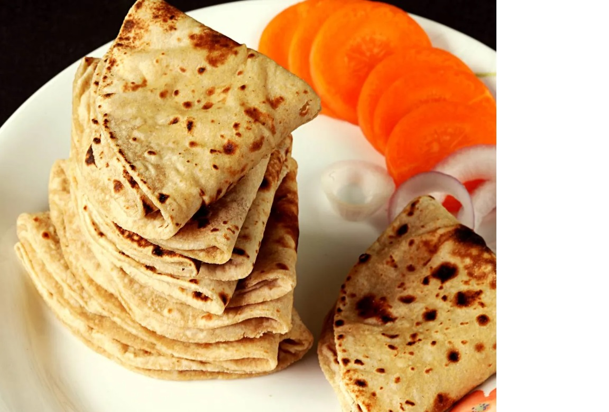
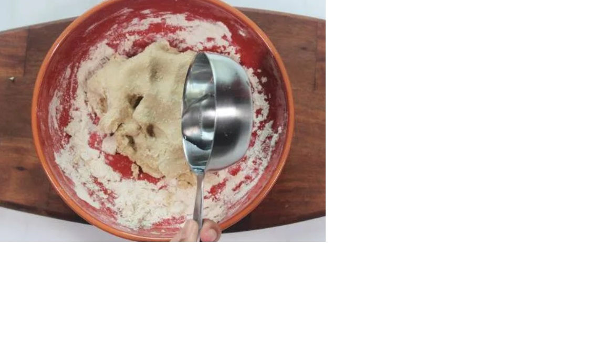
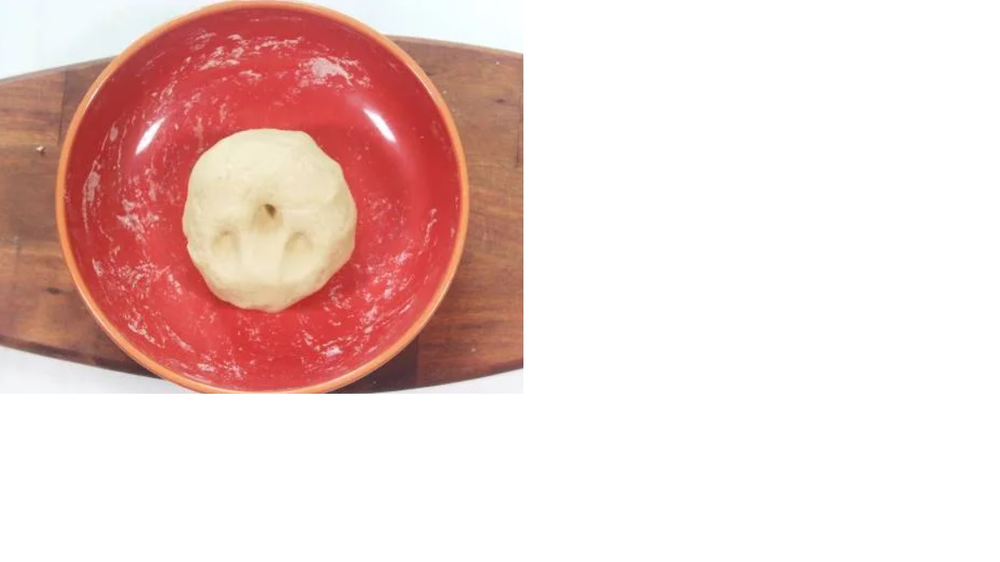

Chappati Recipe with tips & tricks to make them perfect & super soft everytime! There is nothing better than a freshly made flatbread. With the freshest flavor and perfect texture these homemade Chappatis are absolutely the best! Once you master the technique of making soft chappati, you will never buy them from stores. Serve them with dal, curries, stew or use them to make wraps, rolls, quesidillas, kothu roti or chappati noodles.
Chappati is a traditional unleavened flatbread made with just 3 ingredients - whole wheat flour, ghee/oil and water. Optionally a little salt is added.
The term chappati is derived from the Hindi work "Chapat" meaning "flat" which describes the traditional method of shaping chappati by flattening the dough in between the palms. Later rolling pin has taken over this method.
Thought chappati is made with same ingredients as Roti, both are not the same.
Roti also known as phulkha is essentially puffed and is cooked without any fats like ghee or oil. Sometimes it is also cooked on direct flame to help it puff. Once it is off the heat ghee is smeared. Whereas a chappati may or may not puff and is always cooked with fats. It is never cooked on open flame.
Roti is never layered but chappati is sometimes layered. In Maharashtra and some parts of Karnataka chappati is layered just like plain paratha. In few other countries a flatbread inspired by chappati and lachha paratha is made using a pleating technique.
1. Add two cups flour to mixing bowl. Make a well in the center. Usually chappti is not salted but if you want you
may add quater teaspoon of salt and 1 to 1 and half teaspoons of oil. Pout three-quater cup of warm water. I use hot water
not boiling hot.
2. Begin to mix to form a soft dough. If using hot water use a spoon to mix first, later use fingers. If the dough is
too dry, splash a bit of warm water and form the dough. Do not make it sticky.

3. Knead for a minute or 2. Smoothen the dough with your palm. It should be soft not tight and dent easily when you poke with your finger. Smear some water all over the dough. Cover and leave it for 30 minutes at least. 